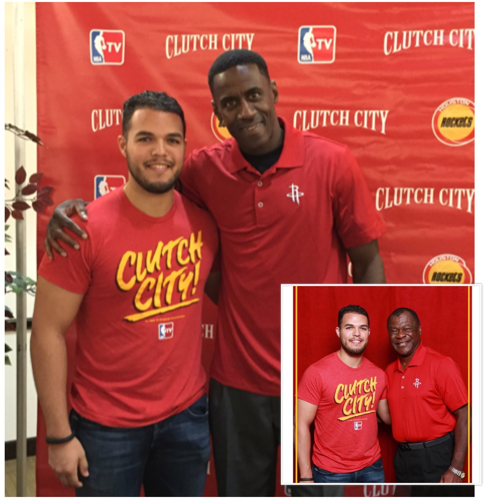

My wife, myself and a group of friends really enjoy going to music feastivals. Here I have listed which ones we have attended. Below that I have added a video I created from the festival Middlelands we attended in 2016.
I am a huge Houston Rockets fan. I grew up watching them with my two brothers and Dad. Whenever possible I love watching a game in person. Here is a picture of myself and Vernon Maxwell and Calvin Murphy.
I really enjoy playing basketball whenever possible. It doesnt matter if it is one on one or a pick up game in the gym, I love the competition.
I love going to the gym. I usually train Monday-Thursday and Friday and Saturday go for a run outside. On Sundays I do my best to make it to the gym to play basketball.
I usually am always reading at least one book. I like non-fiction and self help books. Stephen king and Tony Robbins are two of my favorite authors.